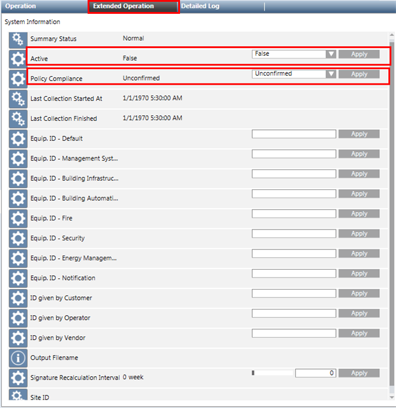

IBase System Information Properties
When you install IBase, a System Information node is added to System Browser under: Application >Advanced Application > System Information.
When you select System Information, the Extended Operation tab displays a list of properties that you can set to configure the behavior of the IBase report.

System Information Properties | |
Property Name | Description |
Summary Status1) 2) | Displays the summary status. |
Active1) | Default value is |
Policy Compliance1) | Default value is |
Last Collection Started At1) | Displays the date and time when the last IBase information collection started. |
Last Collection Finished1) | Displays the date and time when the last information collection was finished and the IBase report was generated. |
Equip.ID-Default1) 2) | This is the default equipment ID that is used when no Equipment ID is provided for a discipline. |
Equip. ID-Management System1) 2) | Provide the equipment ID for the discipline Management System; otherwise the default will be used during IBase report generation. |
Equip. ID-Building Infrastructure1) 2) | Provide the equipment ID for the discipline Building Infrastructure, otherwise the default will be used during IBase report generation. |
Equip. ID-Building Automation1) 2) | Provide the equipment ID for the discipline Building Automation; otherwise the default will be used during IBase report generation. |
Equip. ID-Fire1) 2) | Provide the equipment ID for the discipline Fire; otherwise the default will be used during IBase report generation. |
Equip. ID-Security1) 2) | Provide the equipment ID for the discipline Security; otherwise the default will be used during IBase report generation. |
Equip. ID-Energy Management1) 2) | Provide equipment ID for the discipline Energy Management; otherwise the default will be used during IBase report generation. |
Equip. ID-Notification1) 2) | Provide the equipment ID for the discipline Notification; otherwise the default will be used during IBase report generation. |
ID given by Customer1) | Provide the ID for the system provided by the customer. |
ID given by Operator1) | Provide the ID given by the operator working with the system. |
ID given by Vendor1) | Provide the ID given by vendor. |
Output Filename1) | Location and name of the IBase report generated. |
Signature recalculation Interval | Provide the time interval when the checksum report is to be generated with new data |
Site ID | Provide the site ID of the customer site. |
1) | For each property, click Apply to set the entered value for each property. |
2) | Configurable only in the Extended Operation tab. |